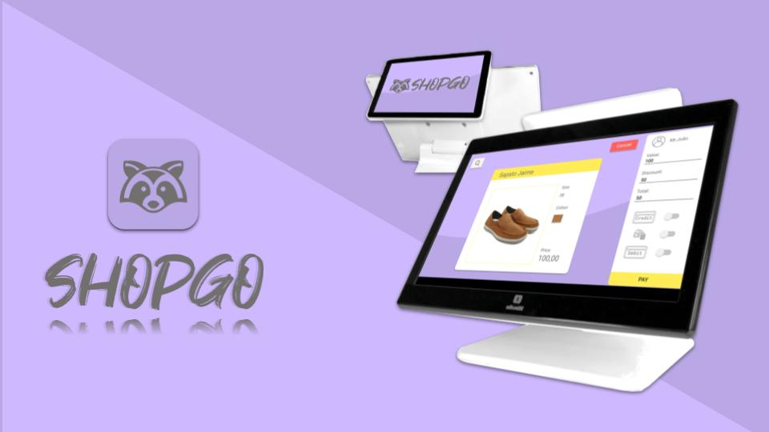

This project was developed as part of the hackathon "Olivetti Cash Register 4.0" in collaboration with the EIT digital master school. It consisted of a 2 days high-fidelity prototype. The challenge was to bring new solutions for the new generation of Olivetti Cash Registers which will help Merchants to digitalize their store by creating a connected digital hub, which manages various applications: Payment, Loyalty, Warehouse, Taxation, Digital Touchpoint etc.

Many supermarkets want to approach the customer in order to offer their new products and they send thousands of emails to everyone without taking care if everybody would be interested in that product. What is the result for this? Spam! This is what we receive and fill our mailboxes and then we have to delete them without even reading. Business owners send spam as an intention to extend their products and sell more. What they do not know is that in the vast majority of cases the process is the opposite, they push us away!
It is true that business owners have the need to promote their products online. So , stop sending emails to the potential customer is not the answer. What we considered, it was to improve the way they are doing this. The idea was to create user profiles based on the customer purchase habits. Every time the customer buys something in the supermarket, the cash machine will save the purchase information, creating on this way a personalized user profile. When the product manager or the one who is in charge to promote a new article or offer, he will send the email for those people who has a clear interest on the product.
It was prototyped three screens. The first one is the client's screen. This mockup is using the front screen of Olivetti. The customer can see the information which is processing during the purchase. Furthermore, our solution tried to reduce as much as possible the number of printings, so part of the solution was sending the receipt by email.
The second screen is the one where the cashier will use during the purchasing. In this screen the cashier need to login and he is able to create new accounts and update information.
The third screen is the most important one. This screen as it mentioned before is designed for the product manager or the one who is in charge to send the publicity. Whenever they have a product to commercialize, the user goes through this screen, fill all the product features. Once the description of the product is finished, the product manager can see total of interested people who match with the new product and send them a email.